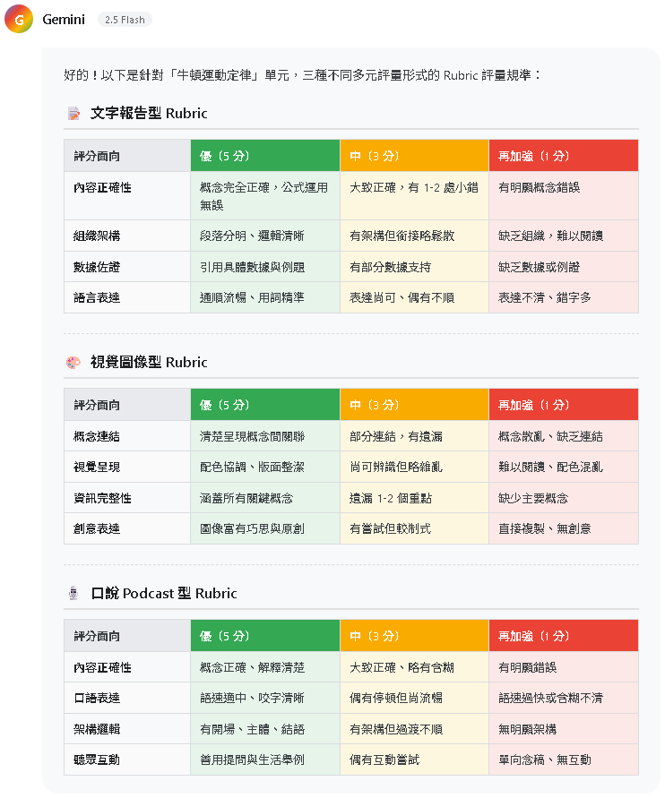
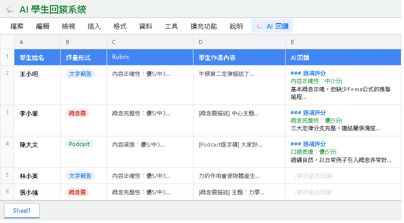
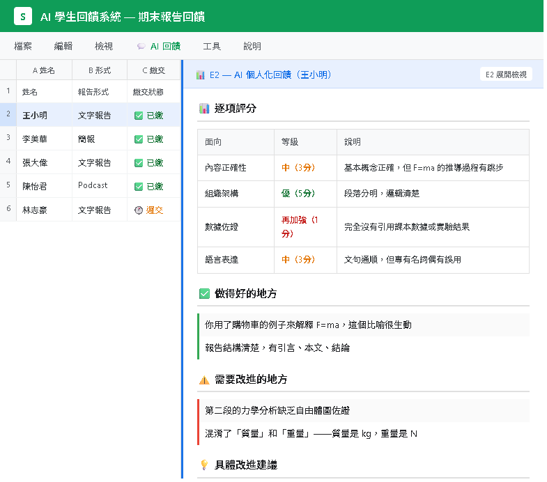
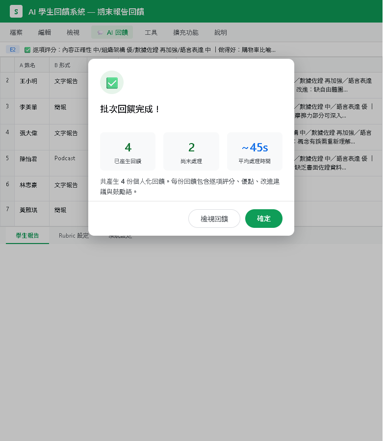

讓學生選擇擅長的方式，再用 AI 給出誠實回饋
三種形式對應多元智能
一次產出三種評分規準
上傳教材提升 AI 準確度
AI 學生回饋系統
「這是我自己選的」
→ 動機自然提升，投入度更高，成果更好
同一個學習目標（例如「理解牛頓第二定律的應用」），提供 3 種不同的評量形式讓學生自己選擇：
擅長文字表達的學生
擅長視覺思考的學生
擅長口語表達的學生
對應智能：語文智能、邏輯智能
形式：800 字書面報告
適合學生：喜歡閱讀、寫作、條理分析
對應智能：空間智能、觀察力
形式：資訊圖表 / 心智圖
適合學生：喜歡畫圖、視覺化、設計排版
對應智能：人際智能、音樂智能
形式：3 分鐘 Podcast 說明
適合學生：喜歡說話、討論、表演
手動設計三種 Rubric 很花時間？交給 Gemini！一個 Prompt 搞定三套評分規準。
請為「牛頓第二定律的應用」這個學習目標， 設計三種不同評量形式的 Rubric： 1. 文字報告（800字） 2. 視覺圖表（資訊圖表或心智圖） 3. 口說 Podcast（3分鐘錄音） 每種形式請設計 3-4 個評分面向， 每個面向分三等級： - 優（5分） - 中（3分） - 再加強（1分） 重要：三種形式的總分要相同，確保公平性。

還記得 Part 1 的滷肉飯策略嗎？讓我們應用在多元評量上。
800 字書面報告
資訊圖表 / 心智圖
3 分鐘口說錄音
寫完報告還要上台發表（更難！）
學生選 A / B / C 時覺得：「至少不用做 D」→ 選擇感提升 → 動機提升
（回顧 Part 1 的滷肉飯策略：大碗 $60 讓小碗 $40 看起來超划算）
如果你直接丟作品給 AI 評分，你會發現一個嚴重問題：
問 AI：「請幫我改這份作業」
問 AI：「請給這份作品評語」
→ AI 只會說好話
→ AI 給出真實、有建設性的回饋
以下 5 個 Prompt 技巧，讓 AI 從「說好話機器」變成「有建設性的評審」：
Prompt：「請先指出這份作品的不足之處，如果要扣分，會在哪裡扣？」
→ 強迫 AI 先從批評開始，避免只說好話
Prompt：「如果滿分 100 分，這份作品你會給幾分？請詳細說明每個扣分的理由。」
→ 具體的分數逼 AI 做出取捨，不能每個都高分
Prompt：「根據以下 Rubric 的每個面向，逐項給分並說明理由。」
→ 有明確標準，AI 就不能模糊帶過
Prompt：「先說需要改進的地方（至少 3 點），再說做得好的地方。」
→ 順序很重要！先批評 = 確保批評不會被省略
Prompt：「你是一位嚴謹但溫暖的老師，你會指出問題但不會隨意給高分。」
→ 角色設定讓 AI 有「嚴格的許可證」
AI 用通用知識評分，可能偏離你的教學重點
AI 根據你上傳的教材評分，精準對應你教的內容
把 NotebookLM 整理的重點摘要貼到 Rubric 欄
新增筆記本畫面
上傳資料後的畫面
| 欄位 | 內容 | 說明 |
|---|---|---|
| A 欄 | 學生姓名 | 例如：王小明 |
| B 欄 | 評量形式 | 文字報告 / 視覺圖表 / Podcast |
| C 欄 | Rubric（評分規準） | 從 Gemini / NotebookLM 產出的 Rubric 貼入 |
| D 欄 | 學生作品內容 | 學生的報告文字 / 圖表描述 / 逐字稿 |
| E 欄 | AI 回饋（自動產生） | 程式自動填入，不需手動輸入 |

選取要產生回饋的列 → 點「💬 AI 回饋」→「🔄 產生個人化回饋」
點「💬 AI 回饋」→「📧 批次產生全部回饋」一次全部跑

AI 產出的每份回饋包含 5 個部分，針對該學生的作品量身打造：
根據 Rubric 的每個面向給分，例如「概念理解 4/5、表達清晰度 3/5、實例應用 5/5」
具體指出哪些部分表現優秀，例如「正確運用 F=ma 分析了三個日常情境」
誠實指出不足，例如「第三段缺少單位標註，因果邏輯有跳躍」
可操作的建議，例如「建議加入受力分析圖，第三段補上因果連接詞」
溫暖但不空泛的鼓勵，例如「你對日常情境的觀察力很敏銳，如果再加上數據佐證會更有說服力」

| 比較面向 | ❌ 無 Rubric + 一般問法 | ✅ 有 Rubric + 正確問法 |
|---|---|---|
| 評分 | 「很好，90 分」 | 「概念理解 4/5、表達清晰度 3/5、實例應用 5/5、格式規範 4/5，總分 16/20」 |
| 優點 | 「寫得很好」 | 「正確使用 F=ma 分析了腳踏車加速、電梯升降、投球三個實例，且每個實例都有數據佐證」 |
| 缺點 | 「可以再加油」 | 「第三段缺少單位標註（應標明 N、kg、m/s²），第二段和第三段之間缺乏因果過渡」 |
| 建議 | 「繼續努力」 | 「建議在第三段加入受力分析圖，並在段落間補上因果連接詞（例如：因此、由此可知）」 |
當學生收到具體、針對性的回饋時，他們會感受到：
「老師有認真看我的作品」→ 關係感提升 → 學習動機提升
即使是 AI 產生的回饋，只要夠具體、夠精準，學生一樣能感受到被重視。
複製以下提示詞，貼到 Gemini / ChatGPT / Claude，即可取得完整程式碼：
請幫我寫一個 Google Apps Script（GAS），功能是「AI 學生回饋系統」。
需求：
1. 在 Google Sheets 建立選單「💬 AI 回饋」，含兩個功能：
- 產生個人化回饋（選取的那一列）
- 批次產生全部回饋
2. Sheets 欄位：A=學生姓名、B=評量形式、C=Rubric 評分規準、D=學生作品、E=AI 回饋
3. 呼叫 Gemini API（gemini-2.5-flash），Prompt 設計重點：
- 角色：「你是一位嚴謹但溫暖的老師，不會隨意給高分」
- 重要指示：「請誠實指出不足之處，如果有缺失就明確指出」
- 輸入：學生姓名、評量形式、Rubric、學生作品
- 輸出格式（5 個區塊）：
📊 逐項評分（根據 Rubric 每個面向給分）
✅ 做得好的地方（2-3 點，要具體）
⚠️ 需要改進的地方（2-3 點，要具體指出哪裡不好）
💡 具體改進建議（2-3 點，要可操作）
💪 鼓勵語（一句話）
4. 批次功能要有 2 秒間隔避免 API 速率限制
技術要求：
- API Key 存在指令碼屬性 GEMINI_API_KEY
- temperature: 0.4（讓回饋有點變化但不失準確）
- 包含錯誤處理和進度提示修改程式碼中的 Prompt，調整回饋風格：
在 Prompt 加入：「以學術標準嚴格評估，不要降低標準」
在 Prompt 加入：「用溫暖鼓勵的語氣，強調成長空間」
20 分鐘
個人操作，小組互相檢查回饋品質
舉手找講師，或參考教材 P.30